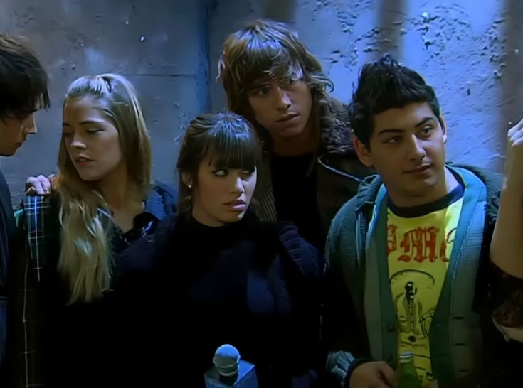

Temporada 4

La cuarta temporada de Casi Ángeles se emitió en 2010 y es la última de la serie. La historia continúa en un futuro marcado por el control, la manipulación y la lucha por la libertad.
Después de los acontecimientos de la temporada anterior, los protagonistas aparecen separados y muchos de ellos viven en una realidad alterada, con recuerdos confusos o identidades cambiadas. Poco a poco comienzan a reencontrarse y a recuperar el sentido de su verdadera historia.
En esta etapa toma mucha importancia la Resistencia, un grupo que se enfrenta al sistema opresivo que domina la sociedad. Los personajes deberán unirse para combatir ese poder y defender sus ideales.
La temporada profundiza temas como la memoria, la identidad, la verdad, el amor y la libertad. También muestra el crecimiento de los protagonistas y el cierre de muchos de los vínculos y conflictos construidos a lo largo de toda la serie.
Además de ser el desenlace de la historia, la cuarta temporada mantiene un rol muy importante de la música y de Teen Angels, acompañando un final emotivo que marcó a gran parte del público.